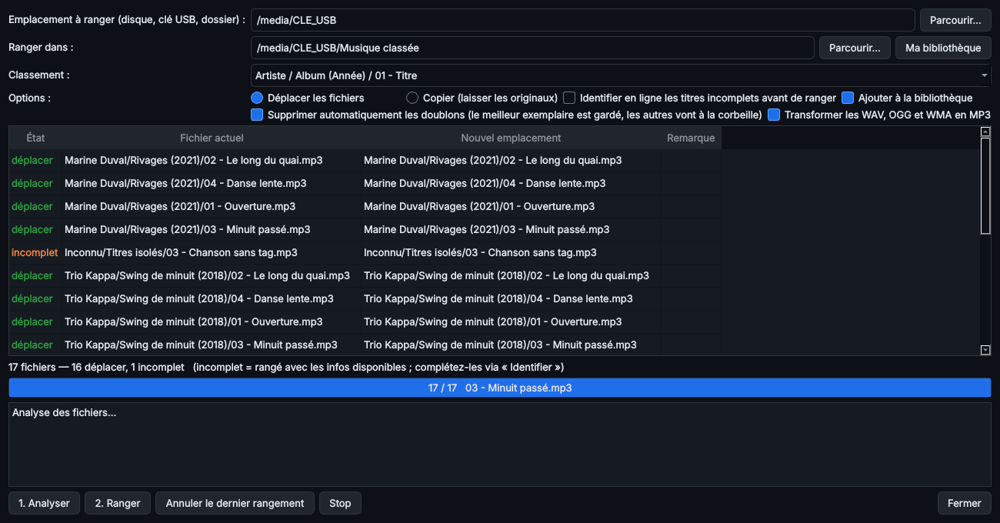

5. Ranger et classer un emplacement
Menu Ranger ▸ Ranger / classer un emplacement (Ctrl+R). Le rangement fonctionne sur un disque dur, une clé USB ou un simple dossier.
Étape par étape
- Emplacement à ranger : par exemple
E:\ pour une clé USB.
- Destination : par défaut
E:\Musique classée, ou « Ma bibliothèque ».
- Mode : Déplacer (les fichiers quittent leur place d'origine) ou Copier (l'original reste intact).
- Options :
- Identifier en ligne les titres incomplets : retrouve d'abord les informations manquantes ;
- Supprimer automatiquement les doublons (cochée par défaut) ;
- Transformer les WAV, OGG et WMA en MP3 (cochée par défaut).
- Analyser : un aperçu montre chaque fichier, sa future place et une remarque (doublon, conversion, remplacement). Rien n'est encore modifié.
- Ranger : les fichiers sont renommés et classés en
Artiste\Album (Année)\01 - Titre.mp3. Les dossiers vides sont supprimés.

L'aperçu du rangement : rien n'est modifié avant « 2. Ranger ».
Doublons
- Sont des doublons : les copies identiques, et le même morceau en plusieurs fichiers (même artiste, même titre, durée proche à 3 secondes près).
- Le meilleur exemplaire est gardé : sans perte (WAV, FLAC) d'abord, puis le meilleur débit, puis celui qui a une pochette et des informations complètes.
- Les autres vont à la Corbeille. Sur une clé USB, Windows n'a pas de corbeille : ils y sont supprimés définitivement.
- Un morceau déjà présent dans la bibliothèque n'est pas recopié. S'il arrive en meilleure qualité, il remplace l'ancien.
- Ne sont pas des doublons : les versions « Live » ou de durée différente, et le même titre sur deux albums différents (album et best-of). Chaque album reste complet.
- En mode Copier, rien n'est supprimé sur le support d'origine : les doublons ne sont simplement pas copiés.
Conversion WAV, OGG et WMA en MP3
- Les informations et la pochette sont conservées.
- Les WAV (et AIFF) sont convertis à la qualité choisie dans les Paramètres (320 kbit/s par défaut).
- Les OGG et WMA, déjà compressés, sont convertis un peu au-dessus de leur qualité d'origine (192 kbit/s au minimum), sans gonfler les fichiers inutilement.
- En mode Déplacer, l'original va à la Corbeille une fois la conversion réussie.
- Un WMA protégé contre la copie (DRM) ne peut pas être converti : il est laissé tel quel, avec un message.
Pour nettoyer une bibliothèque déjà rangée : Ranger ▸ Supprimer les doublons et transformer les WAV / OGG / WMA en MP3.
Fichiers protégés (« accès refusé »)
Un fichier impossible à lire, déplacer ou modifier n'arrête pas le rangement : il est signalé, laissé à sa place, et le rangement passe au suivant.
- La lecture seule (fréquente sur les fichiers copiés d'un CD) est retirée automatiquement quand c'est possible.
- Un fichier copié mais impossible à retirer de la clé est ajouté à la bibliothèque, et l'original reste sur la clé.
- En fin de rangement, la liste « Fichiers non traités » indique chaque fichier ignoré et pourquoi. Fermez le programme qui l'utilise, puis relancez le rangement.
Annuler
Ranger ▸ Annuler le dernier rangement remet en place les fichiers déplacés. Les fichiers supprimés se récupèrent dans la Corbeille.
Référencer sans ranger
Fichier ▸ Ajouter un dossier (Ctrl+O) ajoute un dossier à la bibliothèque sans déplacer ni renommer ses fichiers. F5 actualise la bibliothèque.
◀ 4. Bibliothèque et lecteur · Sommaire · 6. Identifier, modifier les infos, CD et YouTube ▶